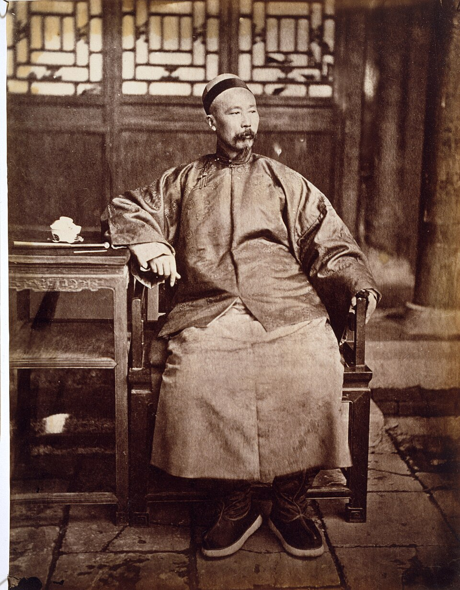
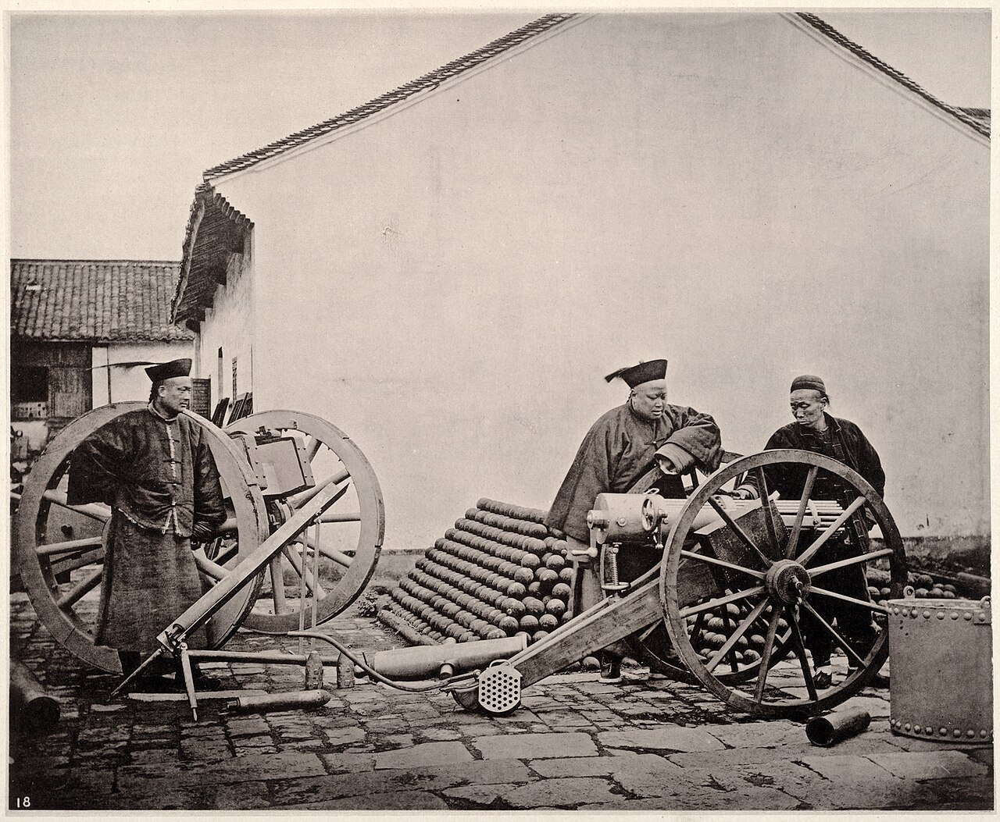

Durante tres décadas, la dinastía Qing intentó comprar tiempo con arsenales, vapores y telégrafos, convencida de que podía injertar la técnica occidental sobre un imperio agrario sin tocar sus instituciones. El experimento levantó la primera industria moderna de China y también demostró, de la forma más dolorosa posible, que los cañones sin reformas no alcanzan.
Toca cada acto para expandirlo.
Tras el devastador impacto de la Segunda Guerra del Opio (1856–1860) y el sofocamiento de la sangrienta Rebelión Taiping (1850–1864), la dinastía Qing entró en un periodo de tregua política y recuperación conocido como la "Restauración T'ung-chih" (1862–1874). El imperio estaba militarmente exhausto, fiscalmente drenado y amenazado por el avance del imperialismo occidental.
Para asegurar la supervivencia dinástica y bajo el lema del erudito Wei Yuan —"aprender las técnicas superiores de los bárbaros para controlar a los bárbaros"—, altos funcionarios imperiales impulsaron el Movimiento de Autofortalecimiento (Yang-wu yundong). Liderado en la corte por el Príncipe Kung y Wen-hsiang, y en las provincias por gobernadores generales como Tseng Kuo-fan, Tso Tsung-t'ang y Li Hung-chang, el proyecto buscó dotar a China de capacidades tecnológicas modernas.
En su primera fase (1861–1872), la iniciativa se volcó exclusivamente a la modernización militar e institucional de emergencia: el Tsungli Yamen (1861) para la diplomacia extranjera, la escuela de lenguas T'ung-wen kuan (1862) y grandes complejos bélicos como el Arsenal de Kiangnan (1865) y el Astillero de Foochow (1866).

El modelo inicial chocó rápido con una barrera financiera y estructural: sostener una infraestructura militar moderna resultaba prohibitivo para un Estado agrario con escasez de capital. En 1876, Li Hung-chang diagnosticó el problema al señalar que "la debilidad crónica de China proviene de la pobreza" y que el poder militar requería indispensablemente de una base de riqueza económica.

Para expandir la industrialización hacia sectores civiles —minería, transporte a vapor, textiles, telégrafos— se creó el esquema de "supervisión oficial y gestión mercantil" (kuan-tu shang-pan). Bajo esta fórmula nacieron empresas pioneras como la China Merchants' Steam Navigation Company (1872), las Minas de Carbón de K'ai-p'ing (1877), la Fábrica de Telas de Algodón de Shanghái (1878) y la Administración Imperial de Telégrafos (1881).
Círculos conservadores encabezados por Wo-jen atacaron el aprendizaje de ciencias occidentales por considerarlo una degradación moral del orden tradicional.
Con Pekín debilitado, los proyectos industriales fueron promovidos por gobernadores provinciales que los gestionaban como bases de poder personal, compitiendo entre sí en vez de operar bajo un plan nacional.
Las empresas kuan-tu shang-pan sufrieron interferencia administrativa, nepotismo, extorsiones fiscales locales y exigencias de dividendos inmediatos de inversionistas temerosos de la confiscación estatal, impidiendo la reinversión de capital.
El movimiento operó bajo el dogma "sabiduría china como fundamento, aprendizaje occidental para uso práctico" (Ti-Yong): injertar tecnología sobre la estructura autocrática y agraria confuciana sin modificar las instituciones políticas, jurídicas o sociales subyacentes.
La prueba de fuego que expuso de forma irreversible el colapso del modelo llegó con la Guerra Sino-Japonesa (1894–1895). A pesar de más de tres décadas de inversión en arsenales y de la Flota de Peiyang (1888), China sufrió una humillante derrota ante Japón, una nación asiática de menor tamaño que sí había transformado radicalmente sus estructuras políticas e institucionales mediante la Restauración Meiji.
El conflicto desnudó la falta de cohesión nacional: la Flota de Nanyang declaró su "neutralidad" y se negó a acudir al rescate de la Flota de Peiyang, que luchó en solitario. Al mismo tiempo, la emperatriz Cixi desvió cerca de 30 millones de taeles del presupuesto naval hacia la reconstrucción recreativa del Palacio de Verano.
El punto de no retorno se selló el 17 de abril de 1895 con el Tratado de Shimonoseki, firmado por Li Hung-chang: China reconoció la independencia de Corea, cedió Taiwán, las islas Pescadores y la península de Liaotung a Japón, y pagó una indemnización de 200 millones de taeles.
El Tratado de Shimonoseki otorgó a las potencias occidentales y a Japón el derecho legal de establecer fábricas e industrias directamente en los puertos de tratado chinos. Con mayor capital, exención de aranceles internos y tecnología avanzada, las empresas extranjeras asfixiaron a las nacientes industrias locales y arruinaron la economía artesanal campesina.
La suma que la corte desvió para su propio ocio recreativo equivale a apenas una séptima parte de lo que tuvo que pagar a Japón meses después.
Las potencias imperialistas fraccionaron a China en esferas de influencia en el llamado "reparto del melón" (Scramble for Concessions), apoderándose de minas y concesiones ferroviarias como el Ferrocarril Oriental Chino de Rusia y la línea Kiaochow-Tsinan de Alemania. Para financiar los 200 millones de taeles, la dinastía Qing contrató préstamos leoninos con consorcios bancarios europeos, comprometiendo los ingresos de las aduanas marítimas y los impuestos a la sal como garantía.
La crisis convenció a los intelectuales de que la modernización requería reformas institucionales profundas, desencadenando la Reforma de los Cien Días en 1898 de K'ang Yu-wei y Liang Ch'i-ch'ao, y fortaleciendo al movimiento revolucionario de Sun Yat-sen.
Nace la clase empresarial urbana. Los polos industriales desarrollados entre 1861 y 1895 transformaron ciudades costeras y fluviales como Shanghái, Tianjin, Hankow y Guangzhou en metrópolis modernas, propiciando el surgimiento de la primera clase obrera urbana y de la clase empresarial/compradora en China.
El dilema histórico de las empresas estatales. El modelo kuan-tu shang-pan sentó el antecedente de la tensión entre el control político del Estado y la autonomía del mercado: un esquema que prefigura los dilemas de gobernanza de las actuales Empresas Estatales (SOE), donde Pekín mantiene la supervisión estratégica mientras busca preservar la eficiencia comercial.
El fracaso de depender del suministro y la asesoría extranjera en el siglo XIX fundamenta la determinación del Estado chino actual en la autonomía tecnológica —"Made in China 2025" y las "Nuevas Fuerzas Productivas de Calidad"— para evitar vulnerabilidades estratégicas frente a presiones externas.
Treinta años de arsenales y vapores no salvaron al imperio porque nunca tocaron las instituciones que los sostenían; la lección sigue viva en cómo Pekín combina innovación con control político.
El viejo esquema de "supervisión oficial, gestión mercantil" es el ancestro directo de la tensión actual entre empresas estatales eficientes y la supervisión del Partido-Estado.
El colapso de 1895 frente a una potencia que sí importó tecnología sin perder soberanía explica la obsesión actual por dominar cada eslabón de la cadena productiva propia.
Contenido curado por el equipo de Club Kongzhi a partir de fuentes académicas reunidas en el cuaderno de NotebookLM dedicado al Movimiento de Autofortalecimiento.